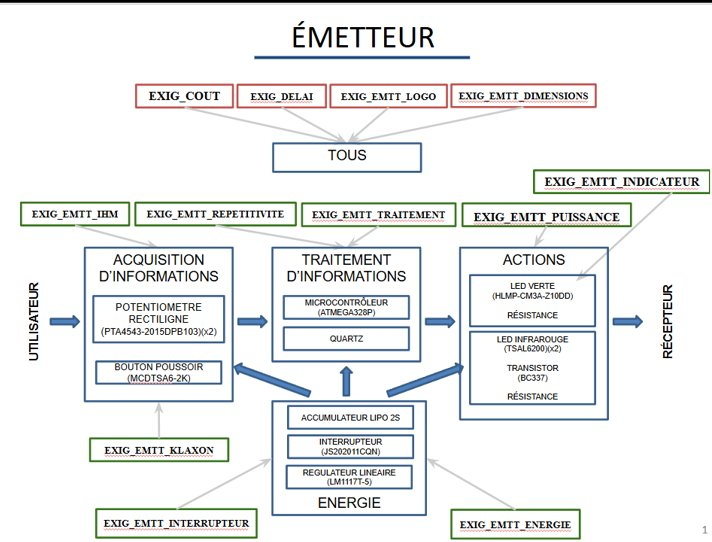
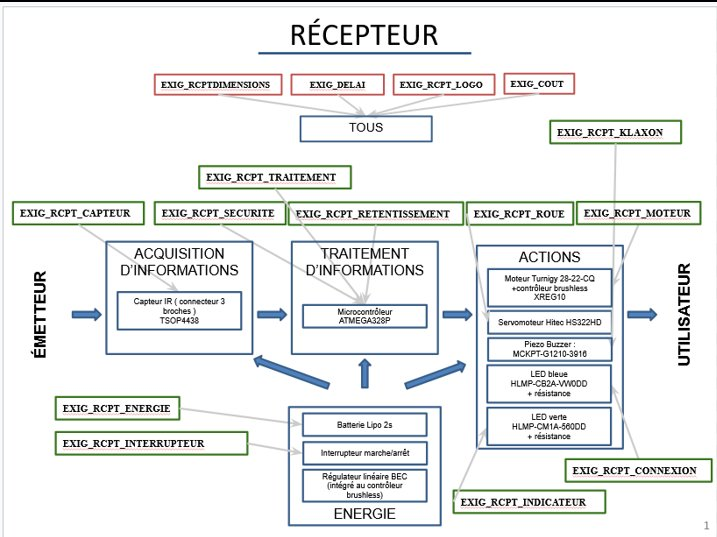
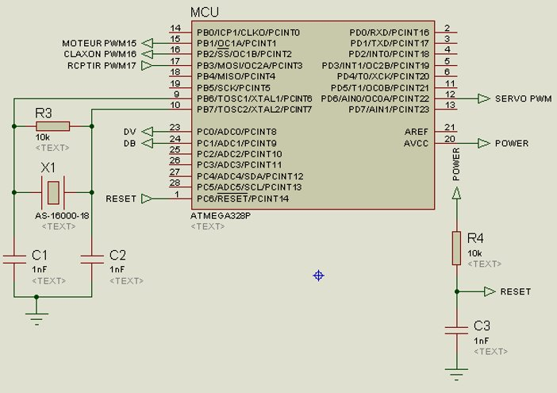
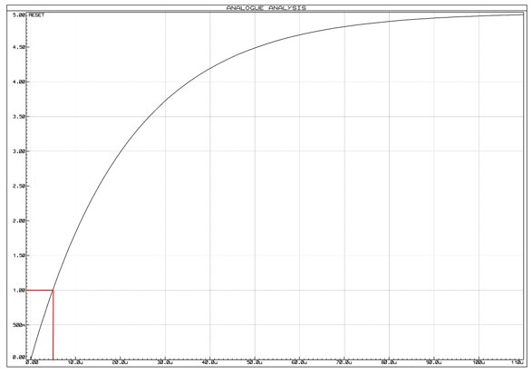
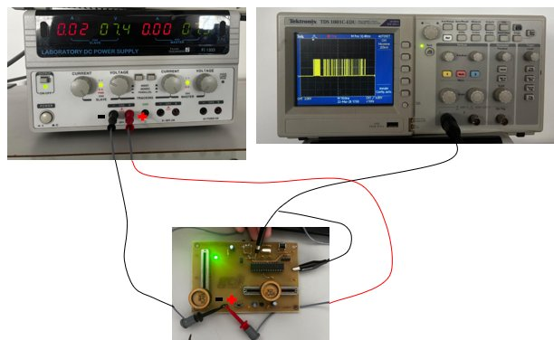
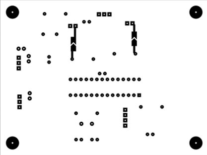
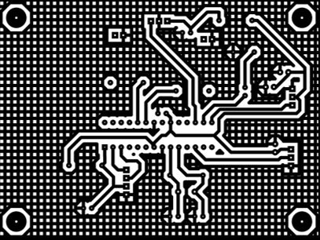
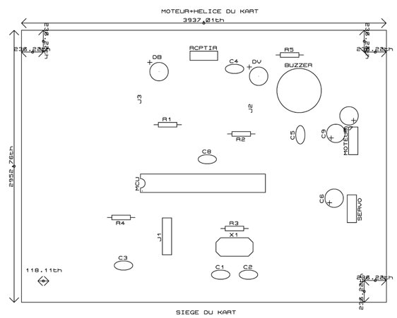
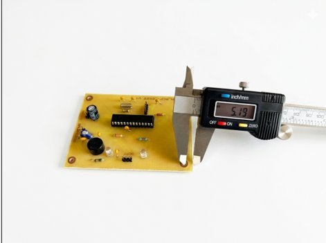

Kart
à Hélice
Conception et vérification d'un kart télécommandé à hélice, infrarouge — émetteur et récepteur — IUT GEII Bordeaux
Le projet
Présentation
Dans le cadre de la SAÉ de première année de BUT GEII, je développe en équipe un kart à hélice télécommandé pour usage en intérieur, commandé par le client fictif Toy Corporation. Le produit se compose de deux sous-systèmes : un émetteur (télécommande, 120 × 80 mm) qui acquiert les consignes de l'utilisateur via deux potentiomètres (vitesse et direction) et un bouton klaxon, puis émet des trames infrarouges au protocole NEC à une distance minimale de 10 m ; et un récepteur (kart, 100 × 75 mm) qui décode ces trames, génère les signaux PWM pour le moteur brushless et le servomoteur de direction, et active un buzzer klaxon à 4 kHz.
L'émetteur est alimenté par un accumulateur LiPo 2S assurant 60 minutes d'autonomie. Le cœur de traitement est une carte Arduino (ATmega328P), responsable de l'acquisition des potentiomètres, du codage en trames NEC, et du pilotage des deux LED IR (courant crête > 200 mA). Le coût total du prototype doit rester inférieur à 160 € TTC, avec un budget de développement de 60 heures.

Fig. 1 (DDC) — Synoptique fonctionnel de l'émetteur : acquisition (potentiomètres PTA4543 × 2 + bouton MCDTSA6-2K), traitement (ATmega328P + quartz), action (LED IR TSAL6200 × 2 + transistor BC337), énergie (LiPo 2S + régulateur LM1117T-5)

Fig. 2 (DDC) — Synoptique fonctionnel du récepteur : acquisition (capteur IR TSOP4438), traitement (ATmega328P), action (moteur brushless Turnigy 28-22-CQ + contrôleur XREG10, servomoteur HS322HD, buzzer MCKPT-G1210-3916, LEDs), énergie (LiPo 2S + BEC intégré)
Phase 1
Ce que j'ai fait — Conception
J'ai pris en charge les paragraphes d'architecture électronique de l'émetteur : acquisition (étage potentiomètres, interface ADC), traitement NEC (codage des octets « address » et « data », construction de la trame, gestion de la répétitivité à 108 ms / 333 ms) et action (pilotage des deux LED IR avec un courant crête supérieur à 200 mA, calcul des résistances de limitation). J'ai analysé les schémas d'architecture fournis et identifié les solutions techniques retenues pour chaque exigence. Mon travail s'est concentré sur la conception et la justification technique des blocs Traitement et Action.
Pour EXIG_EMTT_TRAITEMENT, l'octet « address » encode sur 7 bits la valeur d'équipe (ex. 42h pour le groupe A4, équipe 2) et sur 1 bit l'état du bouton klaxon. L'octet « data » encode sur 3 bits la puissance moteur et sur 5 bits la direction des roues. Pour EXIG_EMTT_REPETITIVITE, la trame est émise en continu à 108 ms lorsque les données changent, et à 333 ms lorsqu'elles sont identiques — les deux avec une tolérance de ±10 %. Pour EXIG_RCPT_SECURITE, en cas d'absence ou de trame invalide, la puissance moteur est immédiatement ramenée à 0.
- Solutions proposées pour le Traitement : J'ai opté pour un double amplificateur opérationnel MCP6002 configuré en comparateur analogique de tension. Ce choix se justifie par sa technologie Rail-to-Rail en entrée et en sortie, indispensable sous une faible alimentation de 5 V pour éviter les tensions de déchet et garantir une comparaison fiable des seuils face au signal du LM35DZ. Pour décoder ces signaux sans microcontrôleur, j'ai proposé l'intégration d'un circuit logique de portes NON-OU (74HC02). Ce circuit CMOS offre une excellente immunité aux bruits et permet, par combinaison logique issue de ma table de vérité, d'isoler mathématiquement les trois plages de température.
- Solutions proposées pour l'Action : J'ai conçu un étage à trois LED (Bleue, Verte, Rouge) configurées en logique exclusive pour assurer l'affichage visuel de l'état de l'eau (trop froide, idéale, trop chaude). Pour garantir qu'une seule LED ne s'allume à la fois, j'ai interfacé les sorties des portes logiques avec des transistors bipolaires montés en commutation, agissant comme des interrupteurs commandés. Chaque branche intègre une résistance de limitation de courant calculée pour fixer l'intensité à 10 mA, assurant une luminosité optimale sans surcharger les sorties du circuit intégré.
C'est à travers ces choix techniques que j'ai développé les compétences suivantes.
J'identifie les fonctions demandées à la lecture du cahier des charges
J'ai décomposé le besoin en fonctions techniques à traiter par le cœur de traitement du récepteur : décoder les trames NEC reçues, contrôler leur validité et l'adresse d'équipe (22h), extraire la puissance moteur sur 3 bits et la direction sur 5 bits, et appliquer la sécurité en cas de trame invalide ou d'absence de signal IR. Pour répondre à ces fonctions, j'ai identifié que l'ATmega328P en boîtier THD était le microcontrôleur adapté : boîtier traversant compatible avec les outils disponibles, ADC 10 bits, timers 16 bits pour générer les signaux PWM moteur et servomoteur avec une résolution de l'ordre de la microseconde, et système d'interruptions pour le décodage NEC.
DDC — Synoptique électronique du récepteur : blocs Acquisition (capteur IR TSOP), Traitement (ATmega328P), Action (moteur brushless, servomoteur, buzzer, LEDs), Énergie (LiPo 2S + BEC)
Je propose une solution technique pour répondre à une fonction
Pour le bloc Traitement récepteur, j'ai argumenté le choix de l'ATmega328P sur la base de ses performances temporelles : à 20 MHz, le microcontrôleur exécute une instruction en 50 ns, ce qui est largement suffisant pour décoder une porteuse NEC à 38 kHz (période 26 µs). J'ai dimensionné le circuit RESET en calculant la résistance minimale à partir de la loi de charge RC — condition : Uc(t) < 0,2·Vcc pendant t > 2,5 µs avec C = 1 nF — obtenant R > 11,2 kΩ, normalisé à 22 kΩ série E3. Pour le montage oscillateur Pierce, en tenant compte des 14 pF parasites internes de l'ATmega, j'ai calculé C1 = C2 = 22 pF pour un quartz 16 MHz à CL = 18 pF.

DDC — Circuit de démarrage RESET récepteur (CDT_RCPT_TRAITEMENT) : R = 22 kΩ, C = 1 nF, τ calculé = 22 µs > 2,5 µs minimum datasheet

DDC — Montage oscillateur Pierce récepteur : quartz 16 MHz, C1 = C2 = 22 pF (CL = 18 pF + 14 pF parasites internes ATmega compensés)
J'affine une solution technique en m'appuyant sur un maquettage numérique et/ou matériel
J'ai simulé le circuit RESET du récepteur sous Proteus ISIS pour valider le dimensionnement analytique. Le montage modélisé est un circuit RC avec R = 22 kΩ, C = 1 nF et Vcc = 5 V, branché sur la broche RESET de l'ATmega328P. La loi de charge donne une constante de temps τ = R·C = 22 µs ; la condition imposée est que la tension sur RESET reste inférieure à 0,2·Vcc = 1 V pendant au moins 2,5 µs au démarrage. La simulation retourne τ = 4,94 µs, supérieur au minimum requis : la broche RESET reste bien à l'état bas suffisamment longtemps pour garantir un démarrage stable et reproductible du microcontrôleur.

DDC — Simulation ISIS : circuit RC de RESET récepteur, chronogramme de montée en tension sur la broche RESET (τ = 4,94 µs > 2,5 µs minimum)

DDF — Carte électronique récepteur assemblée : ATmega328P, capteur IR TSOP, connecteurs moteur brushless, servomoteur et buzzer
Je rédige un dossier de conception et de fabrication
J'ai rédigé les paragraphes de conception préliminaire et détaillée portant sur le bloc Traitement récepteur — choix du microcontrôleur, logique de sécurité, dimensionnement des circuits RESET et oscillateur — ainsi que le bloc Énergie récepteur, l'interrupteur récepteur et le schéma électrique récepteur, en respectant la structure documentaire imposée : rédacteur/relecteur, figures numérotées, référencement explicite des exigences. J'ai également contribué à la nomenclature coût-délai et à l'architecture informatique émetteur.

DDF — Typon top (avec effet miroir) de la carte récepteur : 100 × 75 mm, ATmega328P, TSOP, connecteurs actionneurs

DDF — Schéma électrique du récepteur : ATmega328P, circuit RESET, oscillateur Pierce 16 MHz, capteur TSOP, connecteurs moteur brushless + BEC, servomoteur, buzzer, LEDs
Phase 2
Ce que j'ai fait — Vérification
La phase de vérification en équipe a notamment intégré la validation de la bonne acquisition des tensions des potentiomètres et du bouton de la télécommande, le contrôle de la validité des trames générées en fonction des états de ces IHM, ainsi que la vérification que le kart pouvait fonctionner en continu pendant au moins 15 minutes à mi-puissance du moteur.
Vérification du bloc Énergie (Carte Émettrice) : J'ai qualifié le sous-système d'alimentation de la télécommande. J'ai réalisé des essais de décharge en continu et des mesures électriques afin de valider l'exigence d'autonomie, confirmant que le bloc d'énergie permet au kart de fonctionner pendant au moins 15 minutes consécutives lorsque le moteur est sollicité en continu à mi-puissance. J'ai également mesuré les tensions régulées de la carte émettrice Pycom et validé le fonctionnement de la LED témoin qui signale visuellement la bonne mise sous tension du circuit.
Vérification du bloc Traitement (Carte Émettrice) : J'ai mené les contrôles fonctionnels et protocolaires de la télécommande. J'ai d'abord vérifié la bonne acquisition des tensions analogiques issues des deux potentiomètres (vitesse et direction) et le changement d'état logique lors de l'appui sur le bouton-poussoir. J'ai ensuite instrumenté la sortie infrarouge à l'oscilloscope pour contrôler la validité des trames générées au protocole NEC en fonction des actions sur ces IHM (IHM au repos ou en mouvement). L'intervalle de répétition mesuré est de 107 ms en variation dynamique (spécification à 108 ms ±10 %) et bascule à 333 ms lorsque les commandes restent immobiles.
La conduite de ces essais m'a amené à travailler les compétences suivantes.
J'applique, j'élabore, je rédige une procédure d'essais
J'ai rédigé et appliqué les protocoles de vérification émetteur : mécanique, traitement, répétitivité, énergie et interrupteur — but de l'essai, moyens (références appareils, câblage), procédure numérotée, résultats attendus avec tolérance et statut de conformité. Pour la vérification du bloc Traitement, la procédure consiste à instrumenter la sortie infrarouge à l'oscilloscope et à décoder six cas de trames NEC bit à bit — octet address avec bouton OFF (0010 0010) et ON (1010 0010), quatre combinaisons vitesse/direction — puis à comparer aux valeurs théoriques. Tous les cas sont conformes.

DDV — Schéma de mesure ESS_EXIG_EMTT_TRAITEMENT : oscilloscope sur sortie LED IR (via résistance shunt 4,7 Ω), alimentation LiPo 2S, décodage bit à bit des octets address et data
J'identifie, je corrige les non-conformités d'un prototype
Lors de la vérification mécanique du récepteur au pied à coulisse, j'ai mesuré la distance entre le centre des trous de fixation et les bords de la carte : les trous 1, 3 et 4 donnent des distances de 6,64 mm, 6,62 mm et 5,20 mm — hors de la tolérance autorisée de 5,5 à 6,5 mm. J'ai documenté la cause racine : un manque de précision lors du perçage en atelier. J'ai évalué que la non-conformité était purement mécanique sans impact fonctionnel sur le circuit.

DDV — Oscilloscope ESS_EXIG_EMTT_TRAITEMENT : trame NEC décodée, octet address = 0010 0010 (bouton OFF, adresse 22h), conformité bit à bit vérifiée

DDV — ESS_RCPT_DIMENSIONS : mesure au pied à coulisse de la distance centre-trou/bord de carte récepteur — trous 1, 3, 4 hors tolérance 5,5–6,5 mm
Matrice de conformité — état actuel
Livrables